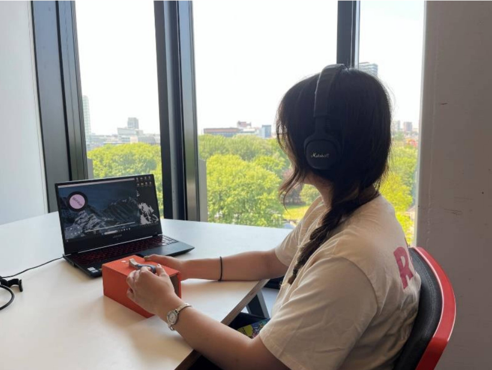
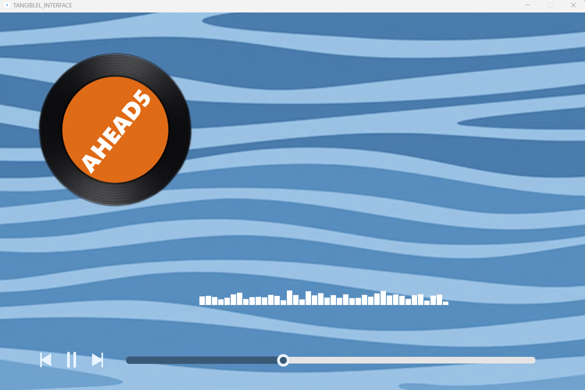
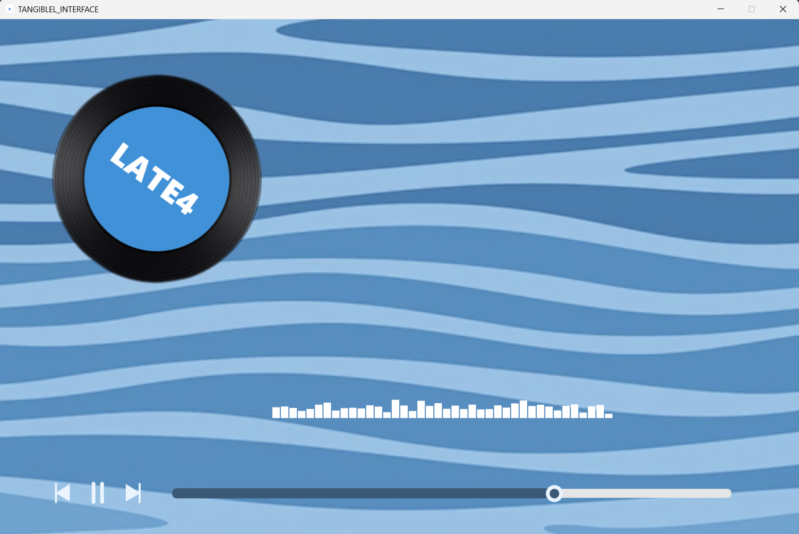
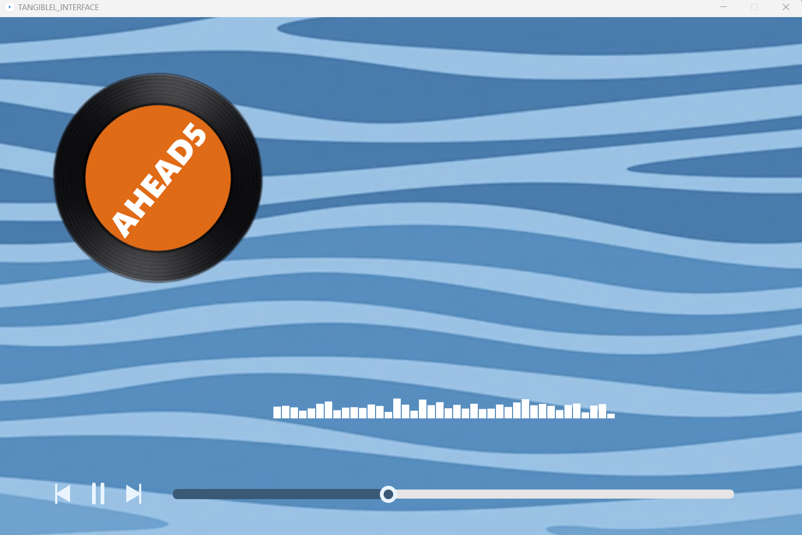
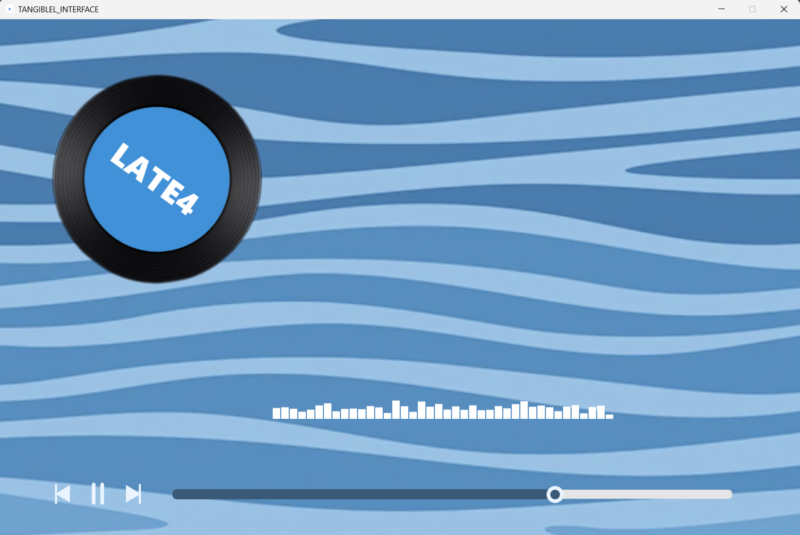
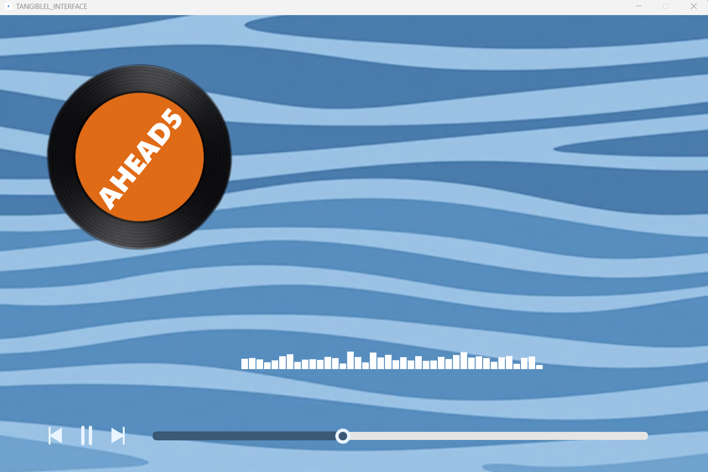
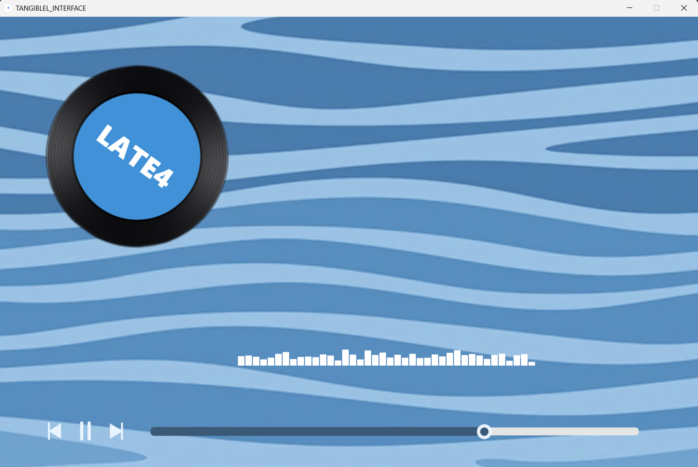

 





Expertise Area: Technology and Realization; User and Society; Creativiy and Aesthetic.
Overview: A design research that employs a tangible interface which supports the user study
designed to find out whether the embodied metaphor1 can enhance people's perception of the
microtiming2 in
grooves. According to the results, the tangible interface applied in this study does not offer a significant
advantage in improving individuals' perception of microtiming in grooves but certain aspects of young
individuals' ability to perceive timing in grooves have been identified
Reflection: In general, this was an exciting project for me. The project focused on music grooves
which interests me very much, and I had the opportunity to conduct user tests and answer questions that
intrigued me. I employed the lab research method. The most exciting part was when users' performances
were represented by data and users were eager to know their results. It added a gamification element to
the task-based user tests. Because of their motivation, the tests and communication were smooth,
efficient, and easy.
However, I see further opportunities to explore the effect of embodied metaphors on people’s perception.
More questions could be asked during interviews, which can be conducted as flexibly as possible, even
resembling brainstorming sessions. This flexible interview approach can provide unexpected and valuable
insights into design evaluation and reflection, and future steps. In this way, more questions and discussions about
users' embodied feelings can occur. Since these feelings are ineffable, people often use very different
and imaginative language to describe them.
The prototyping process for this project seemed rushed, which caused the tangible interaction less
embodied. But it set a goal for my future learning: to improve the quality of prototypes and spend more
time refining the models; to understand the methods of prototyping, such as first making a rough model
and then creating a final high-quality model.
>>report
>>individual refelction
1 Embodied metaphor: An embodied metaphor is a type of metaphor grounded in our physical and sensory
experiences, linking abstract concepts to bodily interactions with the world. For example, the metaphor
"grasping an idea" connects the physical act of grasping with understanding, illustrating how our
cognitive processes are influenced by our bodily experiences.
2 Microtiming: Microtiming refers to the subtle variations in timing that occur within musical
performances, particularly in the execution of rhythm. These tiny deviations from strict metrical timing
contribute to the feel, groove, and expressiveness of the music, often adding a human element to the
performance that can convey emotion and nuance.